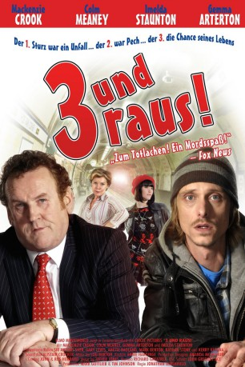
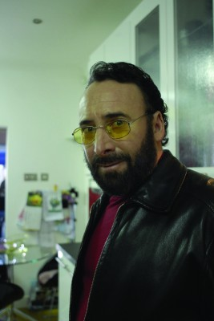
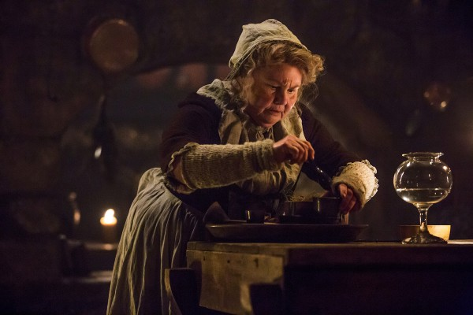

#6152 3 und raus!
Alternativ: A Deal Is a Deal (Englischer Titel)
 
 IMDB-Wertung: 6.2 / 10
IMDB-Wertung: 6.2 / 10  Metascore: 0
Metascore: 0 
Paul Callow hat einen Beruf, der ihn nicht sonderlich glücklich macht. Er ist ein regionaler Bahnfahrer. Als er durch dumme Zufälle auch noch bei zwei Selbstmorden auf den Eisenbahnschienen im Führerhaus des Zuges sitzt, ist er nervlich völlig am Ende. Er will seinen Job nicht mehr ausüben. Da bekommt er den Tipp von seinen Kollegen, dass man als Bahnfahrer nicht nur pensioniert, sondern auch noch fürstlich entlohnt wird, wenn sich innerhalb eines bestimmten Zeitraums drei Menschen vor deinen Augen umbringen. Von nun an setzt Paul alles daran, einen dritten Suizidgefährdeten vor seine Bahn zu locken. Dafür rettet er einem Obdachlosen sogar das Leben, als dieser von einer Brücke springen will, nur um ihm anschließend anzubieten, sich doch besser vor seinen Zug zu werfen. Es beginnt also eine skurrile Suche nach der geeigneten lebensmüden Person.
Jahr: 2008
Dauer: 106 Minuten
FSK: 16
Land: England Studio: Schröder MediaTonspuren: DTS - ,
Untertitel:
Auflösung: 1080p (1920x824) Größe: 9953 MB
Genre: Drama, Komödie
Regisseur: Jonathan Gershfield
Drehbuch: Thomas Gilou
Soundtrack:
Darsteller:
- Mackenzie Crook als Paul Callow
 Colm Meaney als Tommy Cassidy
Colm Meaney als Tommy Cassidy- Sharon Duncan-Brewster als Yvonne
 Imelda Staunton als Rosemary Cassidy
Imelda Staunton als Rosemary Cassidy-  Antony Sher als Maurice
 Gary Lewis als Callaghan
Gary Lewis als Callaghan-  Annette Badland als Maureen
- Kerry Katona als Mary Loughlin
- Rhashan Stone als Ash
 Gemma Arterton als Frankie Cassidy
Gemma Arterton als Frankie Cassidy Mark Benton als Vic
Mark Benton als Vic- Rob Witcomb als Gary
- Emma Barnett als Suzie , uncredited
- Stefan D'Bart als Book Shop Man , uncredited
- Dean Kelly als Duty Constable
- Frank Dunne als Danny Fitzpatrick
- Steve Money als Muscles
Datei: X:\2008(A-F)\3 und raus! (2008, FSK16, 1920x824).mkv seit 09.05.2017
Festplatte: HD 2007(A-Z)-2008(A-F)
 Es gibt insgesamt 66 Filme in der Gruppe '2008(A-F)'
Es gibt insgesamt 66 Filme in der Gruppe '2008(A-F)'